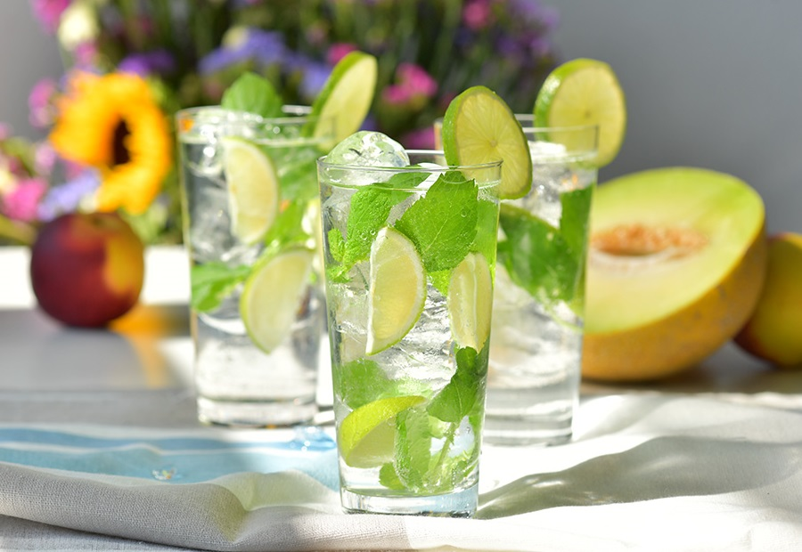

Mojito

Smak mojito (wymawia się: mohito lub mochito) zna chyba każdy miłośnik imprez!
Orzeźwiający, słodko-kwaśny i szybko poprawiający humor słoneczny drink warto przygotować w kilku wersjach podczas tegorocznego karnawału.
Skladniki
- 50 ml białego rumu;
- Pół limonki + ćwiartka do dekoracji;
- 2 łyżeczki cukru trzcinowego;
- Kilka listków mięty;
- 25 ml wody gazowanej;
- Kruszony lód.
Jak zrobic Mojito
- Limonkę wyszorować, pokroić na ćwiartki i wrzucić do szklanki typu long drink;
- Zasypać cukrem i dokładnie ugnieść;
- Dodać listki mięty i znowu ugnieść;
- Do połowy wysokości szklanki dodać lód, a następnie rum i znów lód;
- Zamieszać;
- Na wierzch dodać wodę gazowaną i delikatnie zmieszać;
- Szklankę udekorować limonką i listkami mięty.
Wroc do strony glownej
Zrodlo